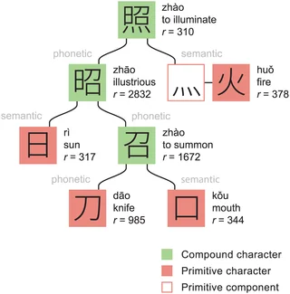

🐉 Willkommen in der Welt der chinesischen Schriftzeichen!
🕰️ Wie sind Hanzi entstanden?

Vor langer, langer Zeit haben Menschen Bilder gezeichnet, um Dinge zu zeigen, zum Beispiel:
von der Sonne ☀️, Bäumen 🌳 oder Tieren 🐮Daraus wurden Piktogramme, also Bild-Zeichen.
Diese Bilder wurden mit der Zeit immer einfacher, und daraus sind Hanzi geworden!
So wurde aus einem Bild ein Zeichen, das man schreiben und lesen kann.Vor tausenden von Jahren malten die Menschen Bilder auf Knochen und Schildkrötenpanzer. Diese Bilder nannten sich „Orakelknochen-Schrift“ (甲骨文). Zum Beispiel:
Ein Kreis mit einem Punkt 🌞 = die Sonne (日)Zwei Bergspitzen ⛰️ = Berg (山)So wurden aus Bildern Zeichen!
🧩 Hanzi sind wie Lego!

Ein Hanzi ist oft aus kleineren Teilen gebaut – die nennen wir Radikale (auf Chinesisch: 部首 bùshǒu).
👉 Diese Radikale zeigen oft die Bedeutung oder die Aussprache eines Zeichens.
📚 Insgesamt gibt es über 200 Radikale, aber für Anfänger reichen etwa 40–50 ganz häufige.
🏗️ So baut man ein Zeichen

Ein Hanzi besteht oft aus: einem Bedeutungs-Radikal auf der linken Seite oder oben einem Laut-Radikal oder anderen Teil auf der rechten Seite oder unten Viele Zeichen bestehen aus zwei oder mehr kleinen Zeichen. Sie zeigen zusammen eine neue Bedeutung. Das nennt man zusammengesetzte Zeichen (会意字). ✅ Beispiel: 明 = 日 (Sonne) + 月 (Mond) = hell 休 = 亻(Mensch) + 木 (Baum) = sich ausruhen Die meisten Hanzi bestehen aus zwei Teilen: Ein Teil zeigt die Bedeutung, Ein Teil zeigt den Klang. Das nennt man Lautzeichen (形声字). ✅ Beispiel: 河 = 氵(Wasser) + 可 (kě) = Fluss 妈 = 女 (Frau) + 马 (mǎ) = Mama